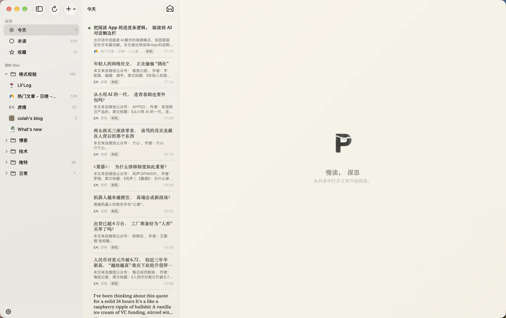
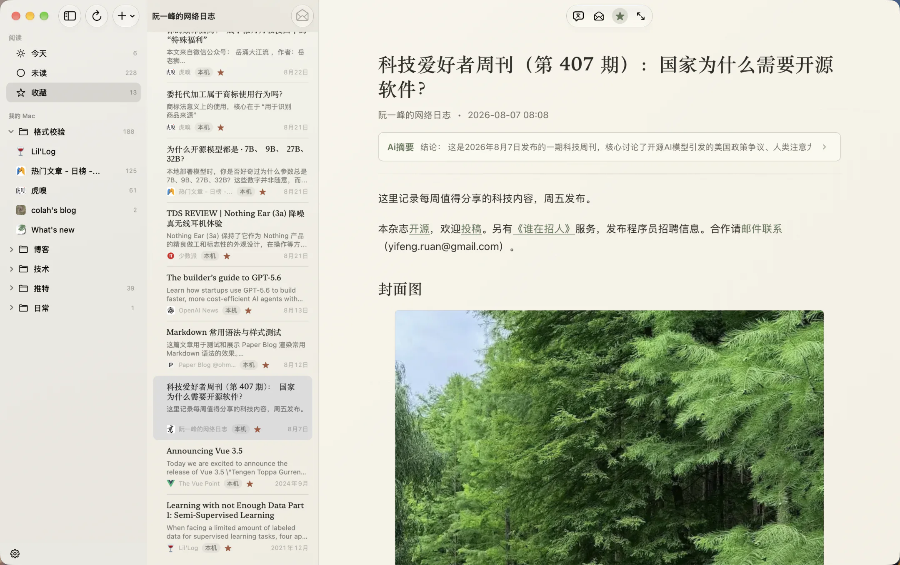

慢读，深思
PaperRss，一款双语流转、克制智能的原生RSS阅读器，提供恰到到好处的AI能力和阅读工具，还原为安静优雅的纸张阅读。
稳定版 v1.3.1 · 体验测试版 v1.3.2-beta.1
更新 App 图标，改进代码高亮与多图排版。



CORE PHILOSOPHY
FEATURES
EDITORIAL EXPERIENCE
兼具美感与效能的阅读体验
01 / BILINGUAL
中英文对照翻译
逐段保留原文与译文，在长文中连续阅读，也能清楚对应上下文。

02 / EXPLAIN & ASK
AI 解释 & 提问
选中文字后，可以结合文章语境直接提问，也可以让 AI 解释陌生词语、概念与背景。


03 / TRANSLATE
划词即时翻译
无需离开阅读页，即可获得当前选中文字的上下文翻译。

FEEDBACK & SUPPORT
反馈与支持 PaperRss 持续进化
PaperRss 是独立开发并开源的软件。欢迎在 GitHub 提交反馈与建议，也可以通过微信赞赏支持开发者的持续投入。

微信扫码赞赏支持
ABOUT